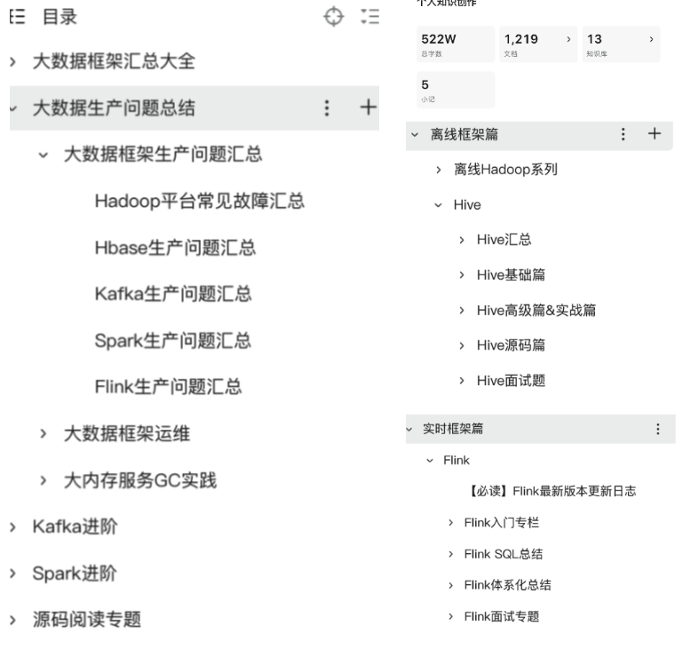
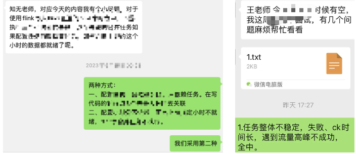
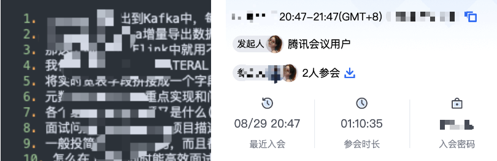
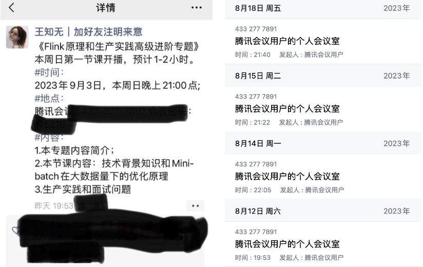
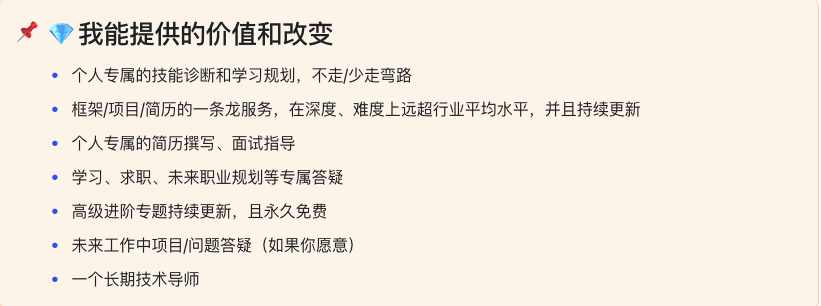

站在大数据行业山顶看风景
大家好，我是你们的朋友王知无。
从2022年开始应很多小伙伴的邀请和咨询，我以个人的名义开了自己的《面向国内Top企业的大数据训练营》。最初这个过程我的内心非常忐忑，从备课、直播、答疑、1对1指导，再到同学们找工作的过程中Offer比较，入职后线上问题和技术方案解答，每一步都付出了巨大努力。
到今天为止，取得了非常瞩目的成绩！
上面是最近几周内同学拿到的新的Offer！
这个训练营主要是我自己打造的专门面向国内头部互联网公司、头部甲方公司的大数据训练营。专门针对面试找工作，帮助同学拿到满意Offer的大数据训练营！
我们训练营的学员，有各种各样的背景，但是都是奔着一个目标来的，就是希望抹平大厂招聘信息差，学到行业内最顶尖公司的真实项目和线上问题并且加入这些公司，训练营的学员拿到的offer包括：「阿里集团、蚂蚁金服、字节国际化电商、字节商业化、快手、哔哩哔哩、比亚迪、吉利、Shopee等各大互联网和甲方公司」，薪水暂时保密😄。
下面是一些Offer和我和同学们的互动截图：
我能给大家提供的价值和服务
✅1对1的诊断学习规划
我个人会给每个同学制定具体的学习路线和计划。大家注意，我会根据每个人的情况不同，跟大家一对一进行腾讯会议。这里我想强调一下，因为每个人的学历背景、工作经历、技术基础都不一样，我会根据你的目标公司或者岗位，1对1定制你的学习计划和规划，最大程度减少这些大公司在招聘时的信息差。
大家知道头部的这些中大公司对于技能模型的要求和小公司相差甚远。这中间的信息差就足以把很多同学拦在门外了。很多同学对某家公司的招聘流程、技能要求都还不太熟悉的情况下就开始投递简历，较差的面评甚至可以影响你未来几年。
这些学习路线和指导我会根据每个同学的真实简历/工作履历，几乎每个都在1小时以上。这些内容会通过录屏发给每个同学。
✅框架专项面试训练
IT开发的每个方向都有大量的开源的资料可以借鉴，比如数据开发方向你可以在网上找到非常多的各种各样的面试题，八股文。但是这些内容是不足以支撑你面试中大公司。
这部分我对每个核心的框架进行了专项总结，这些总结内容分为文字版和视频版本。

来自一些同学的评价：
针对SQL刷题部分还有一些专项练习题库：
这些题目来自我的总结和一些企业的线上真题，这部分内容刷一遍，就不用怕笔试SQL问题了！
针对某一个具体的问题，你可以在私信随时向我提问，我回答你的问题时，不但会告诉你答案，还会站在面试官的角度告诉你面试官想通过这个问题考察什么？他期望得到哪些正确的反馈等。

如果你的问题像这么多，我可以跟你约时间腾讯会议指导你，并且录屏发到你的邮箱。

✅真实的大厂线上项目
项目部分的每一个项目都是我曾经做过的来自于大厂的线上真实项目，他们来自于我的真实工作经历，所有的代码、设计都是我经过脱敏改造后的线上项目。换句话说，你可以从我这里看到国内最TOP、最有深度的项目经历，以及这些项目背后的业务背景、详细设计、以及遇到的问题和解决方案。
这些项目绝非大家网上搜到的烂大街的经不起推敲的项目，很多同学因为工作中没有遇到过有难度的业务场景和技术场景，所以简历上看起来非常浅显，没有任何亮点可言，经不起推敲和面试官的拷打。
每一个项目我都从业务背景、数据流程、线上表结构、方案设计、实际代码开发、难点/亮点挖掘等进行了详细的讲解，配套文字版和视频资料，根据过往同学的反馈，很多人都要看3遍以上才能完全吸收掉。
这些项目可以让国内大多数的公司和面试官眼前一亮，如果这些生产环境中的问题你能和面试官进行探讨的有来有回，那么你的面试会非常顺利。根据我个人的亲身实践《面试完国内5家中大厂，总结如下》，如果你能在项目部分和带动和面试官交流，整体面试难度会下降很多。
而且项目部分我还在持续更新，每一个都是我个人从生产环境中总结出来并亲身实践过的。你能跟上我的学习步伐，那么就已经走在整个行业的最前列了。
✅简历指导和模拟面试
这部分我会给每个同学进行腾讯会议1对1的指导，大家知道大数据开发方向的面试准备内容繁杂，准备面试和写简历是非常重要的一环。
我会根据你的简历和我们训练营的项目跟你详细讲解简历要怎么改，针对性的去准备。后续面试过程中遇到什么难点问题也随时咨询我，而且我非常建议同学们这么做。
并且我这里有非常多的已经成功入职的同学的简历(内容脱敏)，这些简历可以给你很好的参考：

甚至有些同学非常投入，会自己画出自己业务的流程图和架构图，我会根据你的实际业务进行面试指导，如果你能通过我的面试，那么你就能通过绝大多数面试的面试。
并且我这里沉淀了很多同学的大厂面经，这里面的每一份面经我都会参与回答，如果这些问题你有问题，可以直接咨询我，我来告诉你怎么回答会更好，要想回答好这些问题需要哪些资料进一步学习。
✅高阶专题直播和项目直播
项目上新或者有新专题上新时，我们会开启直播模式，这些直播内容以我分享为主，大部分是我基于生产实践进行的总结。例如最近开启的《Flink高级进阶专题》：

这些内容每次直播都会有文字+视频版本内容留存，这些专题内容深度直逼大厂最前沿、最深度的生产应用，如果你想成为大数据领域的专家，这条路你非走不可，与其自己摸索，倒不如跟随我们的专题进行专项提升，大幅减少走弯路的可能！
总结一下
我能给你带来的价值和改变：

适合哪些人？
校招冲刺：想少走弯路，能进入这个行业，但是无从下手也没有学习路线；如果你自学过一些框架并且自己动手做过一些项目最好；
社招进阶：如果你在一家公司（不管规模大小，不管工作多久）螺丝钉属性强，耽误了技术提升，想换工作发现简历上连个像样的项目都没法写；想更上一层楼冲击大厂，但是简历拿不出手；
技术提升：从未接触过复杂项目，工作内容简单重复，技术栈有明显短板
不适合的群体：
不适合纯小白，完全零基础； 不适合自驱力差、抗压能力差的同学（尤其是项目学习部分）
报名
如果想报名，或者还有什么想要咨询的。
直接扫下面微信，记得备注【大数据训练营咨询】。
我会1对1解答你的问题：